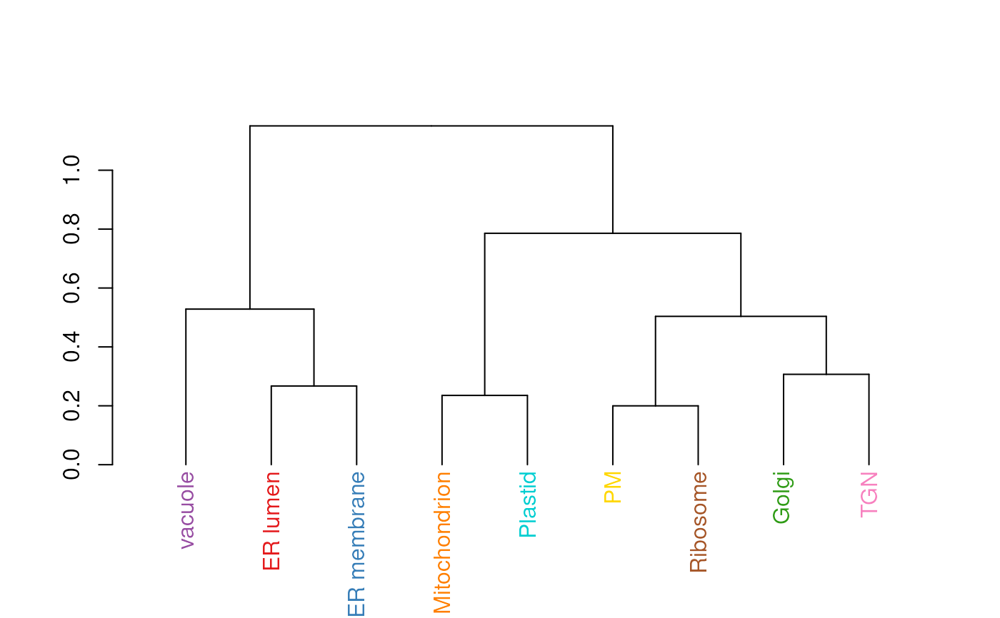

This functions calculates an average protein profile for each
marker class (proteins of unknown localisation are ignored) and
then generates a dendrogram representing the relation between
marker classes. The colours used for the dendrogram labels are
taken from the default colours (see getStockcol) so
as to match the colours with other spatial proteomics
visualisations such as plot2D.
mrkHClust(
object,
fcol = "markers",
distargs,
hclustargs,
method = mean,
plot = TRUE,
...
)An instance of class MSnSet.
Feature meta-data label (fData column name) defining
the groups to be differentiated using different
colours. Default is markers.
A list of arguments to be passed to the
dist function.
A list of arguments to be passed to the
hclust function.
A function to average marker
profiles. Default is mean.
A logical defining whether the dendrogram
should be plotted. Default is TRUE.
Additional parameters passed when plotting the
dendrogram.
Invisibly returns a dendrogram object, containing the
hierarchical cluster as computed by hclust.
library("pRolocdata")
data(dunkley2006)
mrkHClust(dunkley2006)
